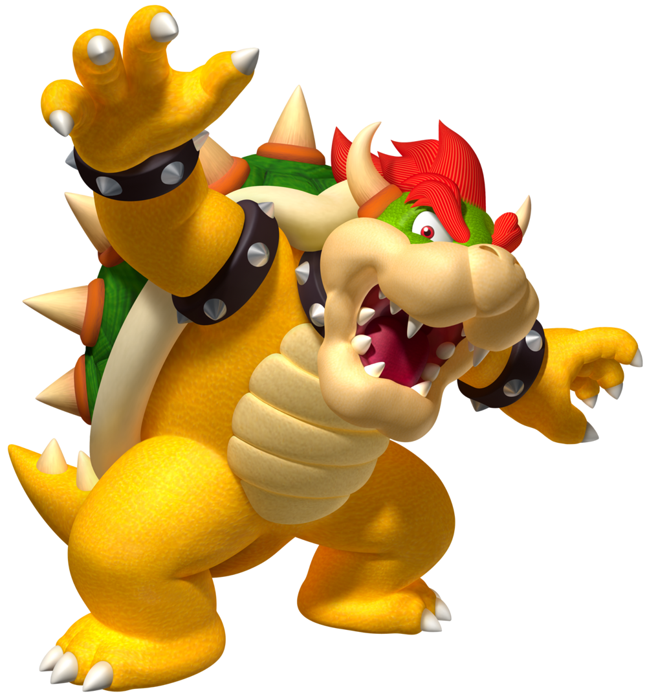

Finalmente conseguindo chegar ao seu destino, a princesa vê Bowser na ponte de madeira que leva para a entrada do castelo.
O que ela deve fazer?
1 - Colocar fogo na ponte.
2 - Dar tapas.
3 - Cortar as cordas da ponte.

1 - Colocar fogo na ponte.
2 - Dar tapas.
3 - Cortar as cordas da ponte.